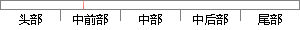

（1）PMI标注的方法与工程图的标注差不多。
片段位置图

相似结果|
相似片段 1：尺寸、几何约束）；Autodesk Inventor软件中拉伸、旋转操作命令；Autodesk Inventor 工程图的建立方法及尺寸标注方法；棱柱、棱锥、圆柱、圆锥、圆环、球的建模及其工程图的表达
相似片段 2：的 Dimension 中的 inferred选项来进行标注，标注方法和二维 CAD 软件标注方法相类似。与二维工程图标注不同的是，用户要选择不同的平面放置尺寸。这个平面可以是坐标系的平面也可以是用户自己定义的平面。 （3）NX 的三维标注也可以创建剖视图，在剖视图上进行标注操作。
相似片段 3：直径。因此一般教学中应当采用手工标注的方法，进行相应的分析和标注。或者以自动标注为主，手工编辑为辅的标注方法。产品制造信息化(PMI)是SE在零件环境为模犁标注尺寸的一种方法，在图纸上生成的正轴测图也
相似片段 4： 图 2.6 标注平面 图 2.7树状结构综上所述利用 UG三维标注系统具有以下优点：（1）简化的传统工程图标注的工作流程，通过 PMI模块直接在对应的特征要素上标注所需15的产品制造信息，提高的绘图的工作效率。
相似片段 5： 5.9 花键套叉的二维工程图5.4.1.2实体模型标注信息的标注根据花键套叉的二维工程图创建三维实体模型，通过 UG系统提供的 PMI标注模块以及添加属性的方式对模型进行三维标注，实体模型及设计制造所需要
相似片段 6：45第5章PMI标注的动态显示????????????????????????465．1PMI标注的动态显示????????????????????????。465．2PMI标注动态显示实现方法
相似片段 7：二维工程图的标注方法实现[1]。因此三维标注的具体实现步骤可分为以下三步：(1)在产品的三维实体空间中选定一个注释平面用于放置标注的文本；(2)选定需要标注的特征，再把该特征投影到选定好的注释平面上
相似片段 8： 基于MBD的三维模型信息标注与管理——成彬，等 V01．36No．11图2 MBD模型结构2基于MBD三维信息标注技术的开发2．1 基于PMI的三维信息标注(1)PMI的标注方法UGNX提供了一个标注
|
※ 片段修改建议 ※
近似词参考：- 方法：方式 要领 法子
系统自动生成语句：（1）PMI标注的方式与工程图的标注差不多。
注：本片段修改建议为系统自动生成，仅供参考。